Tutorial (Under Development)#
Note
Before following this tutorial, please follow the five minute guide found here.
Preparing Input Data#
In your WaterGap repository you will find an input_data folder, which will hold all relevant climate forcings, water use data as well as static data needed to run the simulation. Throughout this Tutorial we will be running the simulation for the year 1989.
A comprehensive list of available data from the Goethe University Frankfurt can be found here:
1) Download the climate forcing data of your choice.#
To begin running WaterGAP we must download the necessary climate forcing data. In the following examples, we will be using the forcing “gswp3-w5e5_obsclim” from ISIMIP .
The forcings from ISIMIP are sorted in groups of 10 years. We will be using the group of 1981 to 1990 as our example year of 1989 is in this group. The forcings required are:
precipitation [kg m-2 s-1]; Link in ISIMIP
downward longwave radiation [Wm-2]; Link in ISIMIP
downward shortwave radiation [Wm-2]; Link in ISIMIP
temperature [K]; Link in ISIMIP
Note
Make sure to remove the leap days (29th February) from the climate forcings if you are running the simulation for a leap year (WaterGap does not consider leap days).
2) Download the water use data.#
Next up we will need to download the necessary water use data. In the following examples, we will be using the forcing “gswp3-w5e5_obsclim” from the Goethe-Universität Frankfurt.
The forcings required are:
potential consumptive use from irrigation using surface water \([m3/month]\)
potential water withdrawal use from irrigation using surface water \([m3/month]\)
potential net abstractions from surface water \([m3/month]\)
potential net abstractions from groundwater \([m3/month]\)
In the following tutorials we will be using data provided by Müller Schmied, H. and Nyenah, E. via the Goethe University Frankfurt which can be downloaded here.
3) Place the downloaded data into their correct folders in the repository.#
Once your climate forcing and water use data has finished downloading, in your WaterGAP repository, navigate to “input_data” and place the downloaded files in their correct folders as seen in the picture below:

Running Water Gap with different simulation options (other model configurations)#
Naturalized Run#
This simulation computes naturalized flows and storages that would occur if there were neither human water use nor global man-made reservoirs/regulated lakes.
To run Water Gap in a naturalized mode, find the tutorial in the five minute guide here.
Standard anthropogenic Run#
The standard run in WaterGAP simulates the effects of both human water use and man-made reservoirs (including their commissioning years) on flows and storages.
In the example below, we will create a standard run for one year (1989) and go through the necessary steps, step-by-step.
Prerequisites: You will need to clone WaterGAP and create an environment to run it in. If you haven’t done so already follow the five minute guide for this.
1) Prepare the input data#
Download all required climate forcing and water use data, remove all leap days, and place the data in the “input_data” folder in your ReWaterGAP repository as explained above.
2) Set up the configuration file#
WaterGAP can be setup for your specific usecase. In the following we will be going through the various configuration options as well as the available output options and configuring the simulation for a standard anthropogenic run without restart. For a detailed description on the possible settings see our guide to the configuration file.
To configure WaterGAP, go to your WaterGAP repository and navigate to “Config_ReWaterGAP.json” and open the configuration file.
2.1) File Paths
The first options in the configuration file regard input and output file paths. In this example, we will leave them unmodified. The locations for input and output data can be seen in the picture below.
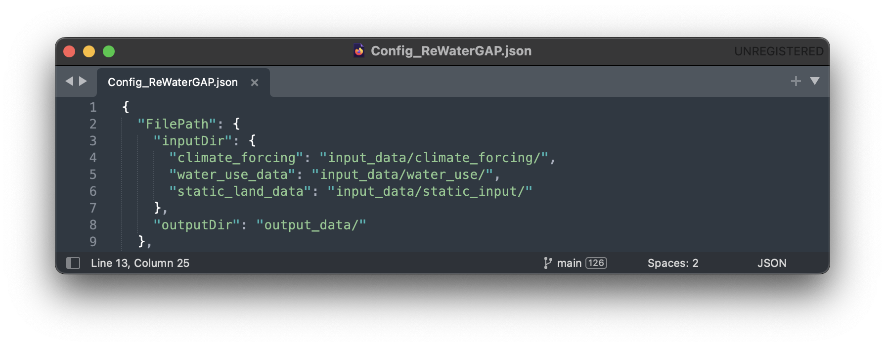
2.2) Runtime Options
In the configuration file find the runtime options. Then find the simulation options. Set all options under “AntNat_opts” to “true” and all options under “Demand_satisfaction_opts” to “true” to set up a standard anthropogenic run.
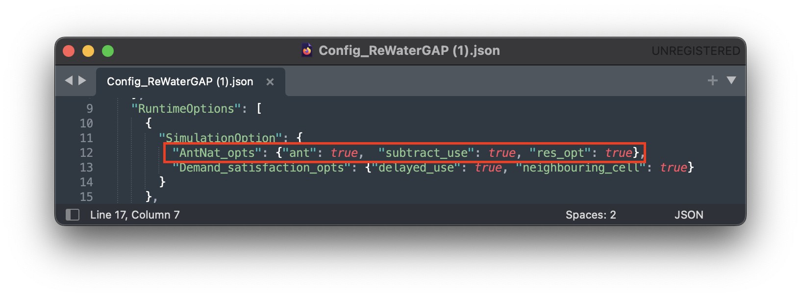
2.3) Restart Options
In this run, WaterGap will not restart from a previous state. Under “restart_options” make sure each option is set to “false”.
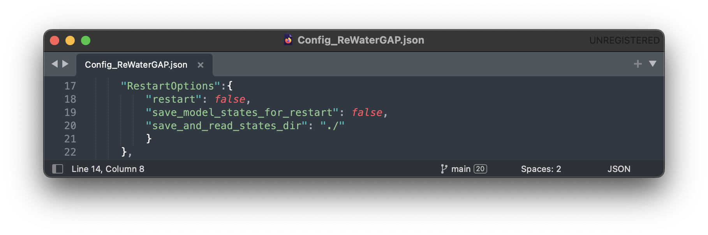
To find more information on restart options find a tutorial on how to save and restart WaterGAP here.
2.4) Simulation Period Options
In this example we are running the simulation for the year 1989. Under “SimulationPeriod” change the “start” date to “1989-01-01” and the “end” date to “1989-12-31”. For the reservoir operational years set the start and end years to “1989”.
We will be using a five year spin-up period in this example. Set “spinup_years” to “5”.
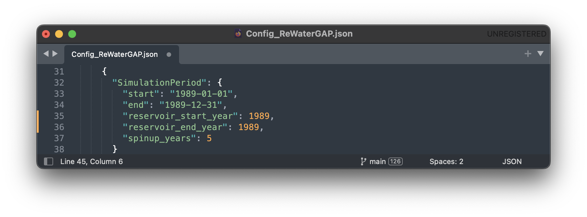
2.5) Time step
Under “time_step” set the resolution to “daily”.
2.6) Simulation Extend
We will not be running WaterGAP for a basin in this example so set the “run_basin” option under “SimulationExtent” to “false”.
2.7) Output Variables
Any number of variables may be written out. In this example, we will only write out the “streamflow” variable. Under “LateralWaterBalanceFluxes” find “streamflow” and set it to “true”. Everything else should be set to “false”. For a detailed explanation on which variables can be written out see the glossary.
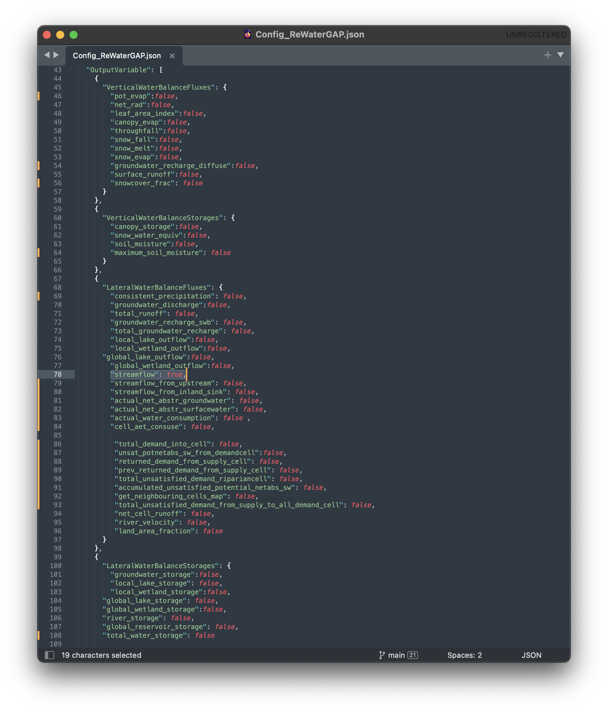
2.8) Save the configuration file
Save the configuration file
3) Run the simulation#
Navigate to your ReWaterGAP folder in the terminal, activate your environment, and run WaterGAP using the following command:
$ python3 run_watergap.py Config_ReWaterGAP.json
In case of a problem find help in the five minute guide.
If your run has been successful, your Terminal should look like this:
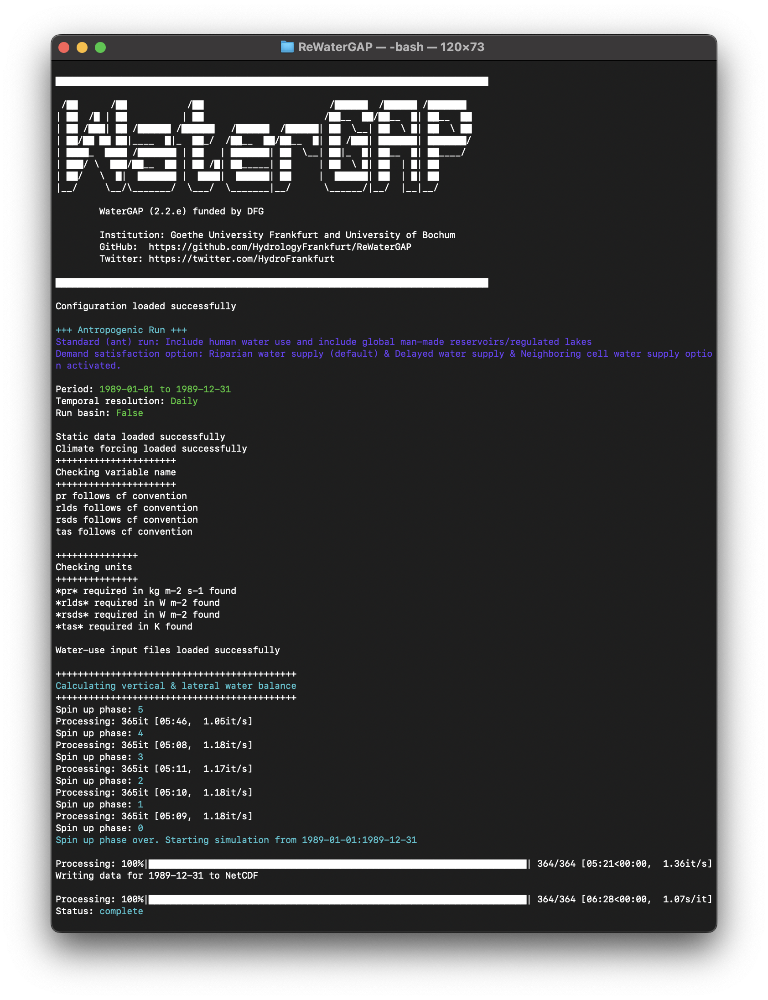
In your WaterGAP repository under “output_data” you will find a file named “dis_1989-12-31.nc”.
4) Visualize your results#
To visualize the output of any given simulation we suggest using Panopoly. Find our guide to Panopoly here.
For the year 1989 the result should look like this:
Human Water Use only#
This simulation includes human water use but excludes global man-made reservoirs/regulated lakes. When creating a human-water-use-only run, the setup follows the standard run in all but one step. In the example below, we will create a human-water-use-only run for one year (1989) and go through the steps step-by-step.
Prerequisites: You will need to clone WaterGAP and create an environment to run it in. If you haven’t done so, follow the five minute guide for this.
1) Prepare the input data.#
Download all required climate forcing and water use data, remove all leap days, and place the data in the “input_data” folder in your ReWaterGAP repository as explained above.
2) Set up the configuration file#
The only difference between a standard and a human-water-use-only run are the simulation options. In your configuration file, under “SimulationOption” find “AntNat_opts”. Set “ant” to “true,” “subtract_use” to “true” and “res_opt” to “false” as seen in the picture below.
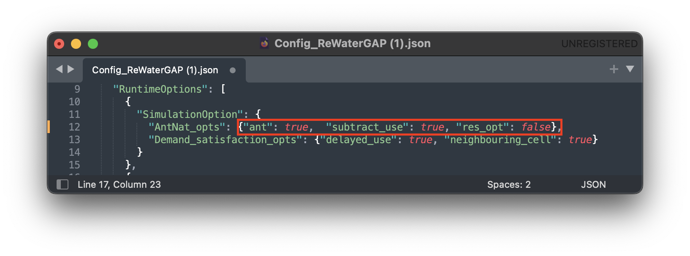
Set up File Paths, other Runtime Options, Restart Options, Simulation Period Options, Time step, Simulation Extend and Output Variables as described above and save it.
3) Run the simulation#
Navigate to your ReWaterGAP folder in the terminal, activate your environment, and run WaterGAP using the following command:
$ python3 run_watergap.py Config_ReWaterGAP.json
In case of a problem find help in the five minute guide.
In your WaterGAP repository under “output_data” you will find a file named “dis_1989-12-31.nc”.
4) Visualize your results#
To visualize the output of any given simulation we suggest using Panopoly. Find our guide to Panopoly here.
For the year 1989 the result should look like this:
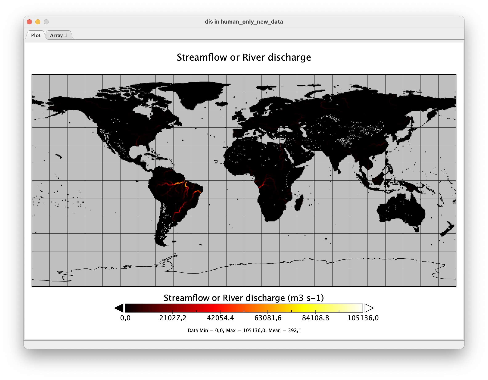
Reservoirs only#
This simulation excludes human water use but includes global man-made reservoirs/regulated lakes. When creating a reservoirs-only run, the setup follows the standard run in all but one step. In the example below, we will create a reservoirs-only run for one year (1989) and go through the steps step-by-step.
Prerequisites: You will need to clone WaterGAP and create an environment to run it in. If you haven’t done so, follow the five minute guide for this.
1) Prepare the input data.#
Download all required climate forcing and water use data, remove all leap days, and place the data in the “input_data” folder in your ReWaterGAP repository as explained above.
2) Set up the configuration file#
The only difference between a standard and a reservoirs-only run are the simulation options. In your configuration file, under “SimulationOption” find “AntNat_opts”. Set “ant” to “true,” “subtract_use” to “false” and “res_opt” to “true” as seen in the picture below.
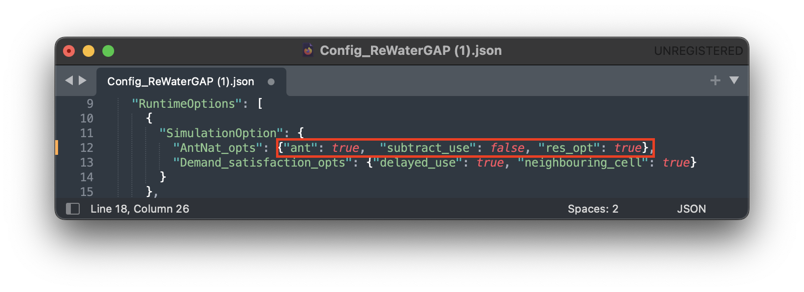
Set up File Paths, other Runtime Options, Restart Options, Simulation Period Options, Time step, Simulation Extend and Output Variables as described above and save it.
3) Run the simulation#
Navigate to your ReWaterGAP folder in the terminal, activate your environment, and run WaterGAP using the following command:
$ python3 run_watergap.py Config_ReWaterGAP.json
In case of a problem find help in the five minute guide.
In your WaterGAP repository under “output_data” you will find a file named “dis_1989-12-31.nc”.
4) Visualizing your results using Panopoly#
To visualize the output of any given simulation we suggest using Panopoly. Find our guide to Panopoly here.
For the year 1989 the result should look like this:
How to Restart WaterGap from saved state#
To run Watergap from a saved state, you must first save data from a previous simulation. In this tutorial, we will be looking at the previous example, where we ran the simulation for a standard anthropogenic run for the year 1989, create a saved state, and then restart the simulation from this data to continue running for 1990.
Creating a saved state#
Restarting the simulation works for any of the simulation options (Standard Run, Naturalized Run, Human Water Use and Reservoirs only). In this example, we will be creating a saved state for a standard anthropogenic run.
Before running the simulation we have to modify the configuration file. In your WaterGAP repository, navigate to “Config_ReWaterGAP.json”. Under “RestartOptions”, set “restart” to “false” and “save_model_states_for_restart” to “true”, as this is the run we will be creating the saved state from. On your computer create a folder to save the saved state data in. In this example, we will be using a folder under “Users/username/restart_data”. In your configuration file, set “save_and_read_states_dir” to the created directory, as shown in the image below .
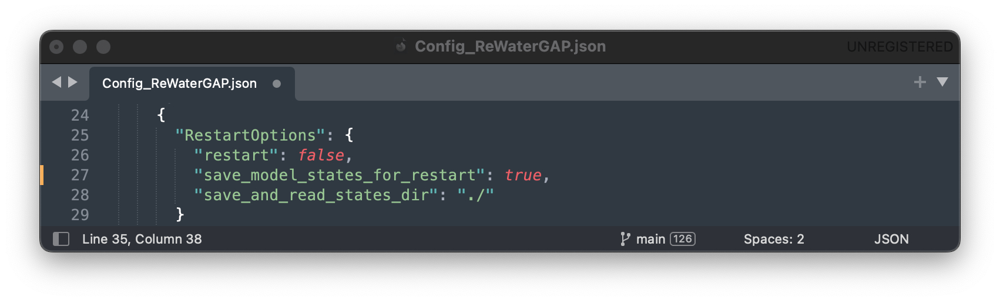
Then set your “SimulationPeriod” to the preferred year (In this example 1989) and the “spinup_years” to 5.
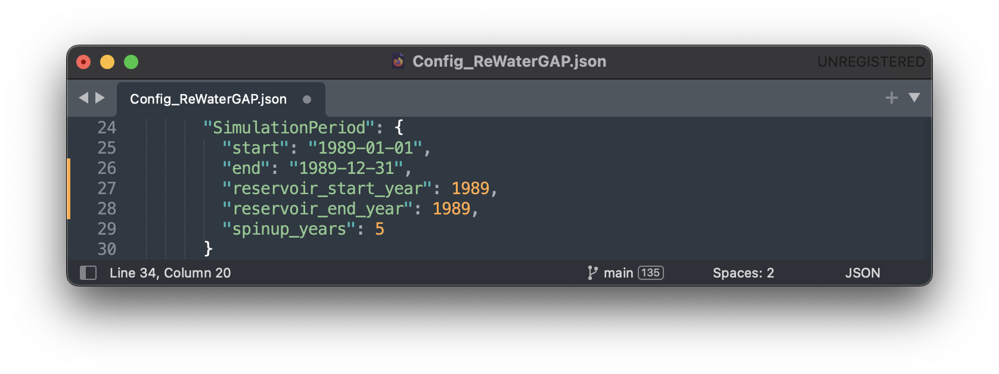
All other options and steps to run the simulation will remain as they are described under standard anthropogenic run.
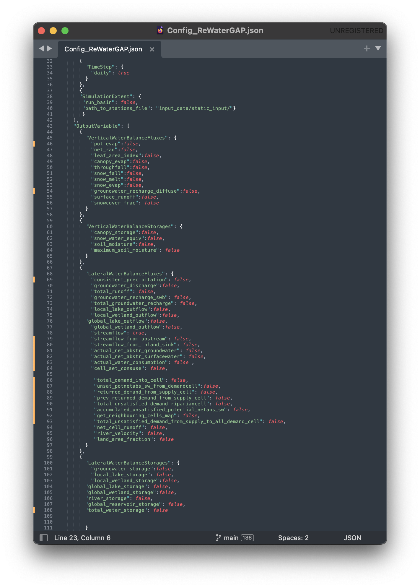
Run the simulation. You will then find your saved state data file “restartwatergap_1989-12-31.pickle” in your saved state directory (in this example under “Users/username/restart_data”).
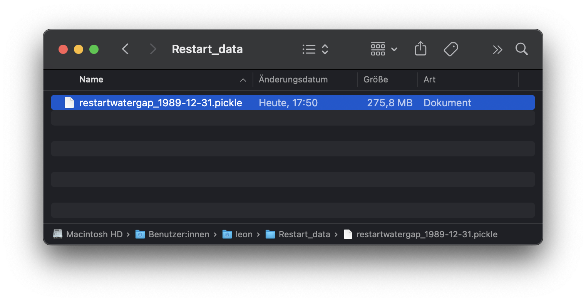
Running the simulation from saved data#
In this step we will be running the simulation from the previously saved state, for the year 1990, starting one day after the last day saved in the saved state. It is possible to run the simulation for any time period even beyond the one year used here.
To run the simulation from a previously saved state go to the configuration file and navigate to “RestartOptions”. Set restart to “true” and “save_model_states_for_restart” to “false”, as this is the run we will be using the saved data for. Under “save_and_read_states_dir” set the path to the previously created directory holding your saved data (in this example under “Users/username/restart_data”).
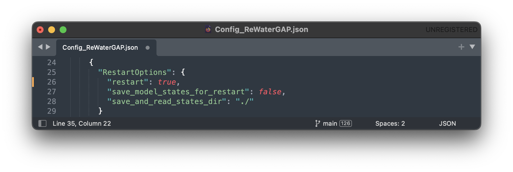
When we created the saved data we ran the simulation for the year 1989, with a five year spin up. Since this is our saved data, when running the simulation from this saved state we can only run it starting the day after. Here, we will be running the simulation for the year 1990, starting one day after the saved state data ends and without a spin up, as the saved state already includes this data.
All other options will remain as they are described under creating a saved state.
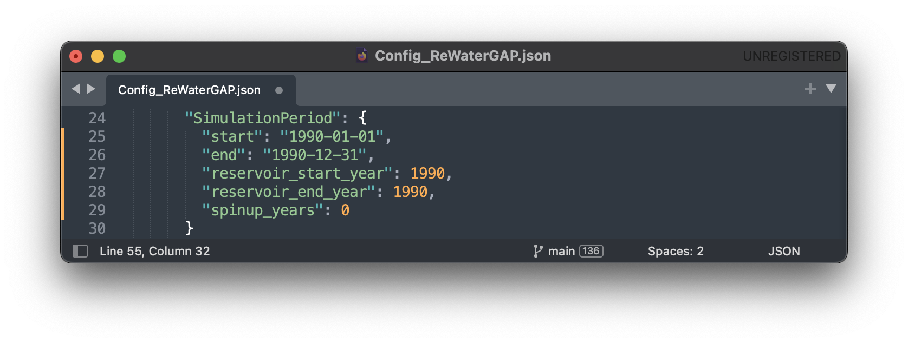
Lastly, run the simulation with these options. To verify that everything is running as intended, you should receive this message in the terminal:
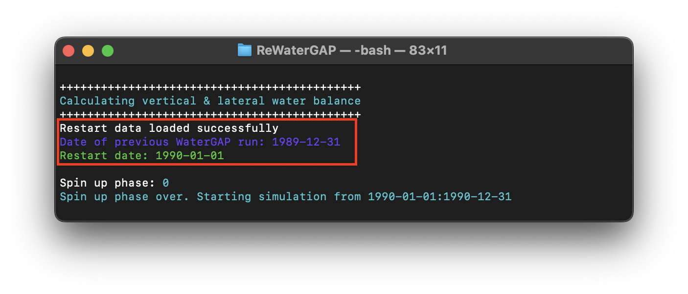
Vizualizing your results using Panopoly#
To visualize the output of any given simulation we suggest using Panopoly. You can use it to open the input files in NetCDF format or your output files after the simulation has finished running. In this Tutorial we will be using Panopoly to vizualize the output data of the standard anthropogenic run for the year 1989.
Begin by downloading and installing Panopoly. Then click on “file” -> “open”. Navigate to your ReWaterGAP folder. Then to “output_data” and select the created file “dis_1989-12-31.nc”. Click on “open”.
You should now see your data set. Double-click the “dis” file in “Geo2D” format and click create.
Once you see a world map, labeled “Streamflow or River discharge” go to “Window” -> “Plot Controls” where you will see the time set to “1” of “365”. By increasing the time you will see the River discharge change visually on the map. We recommend changing the color scheme to “GMT_hot.cpt” under “Window” -> “Color Tables Browser”.
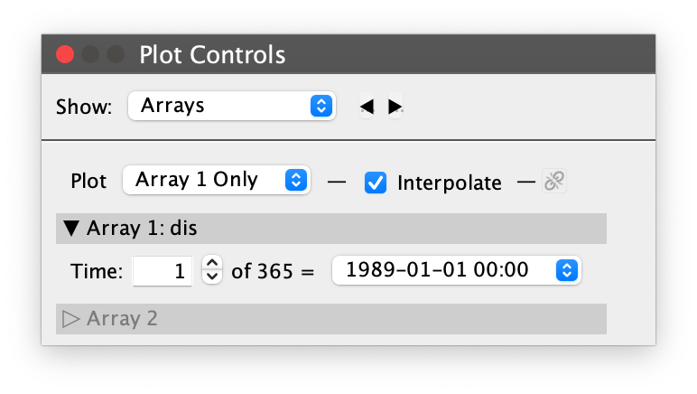